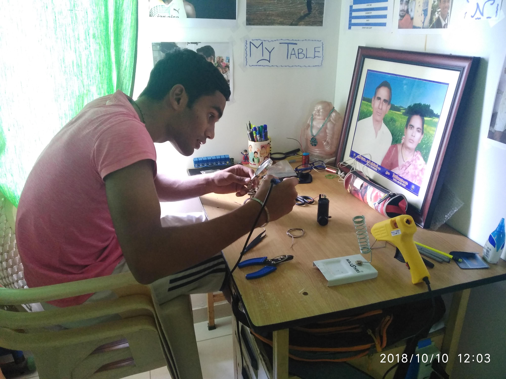
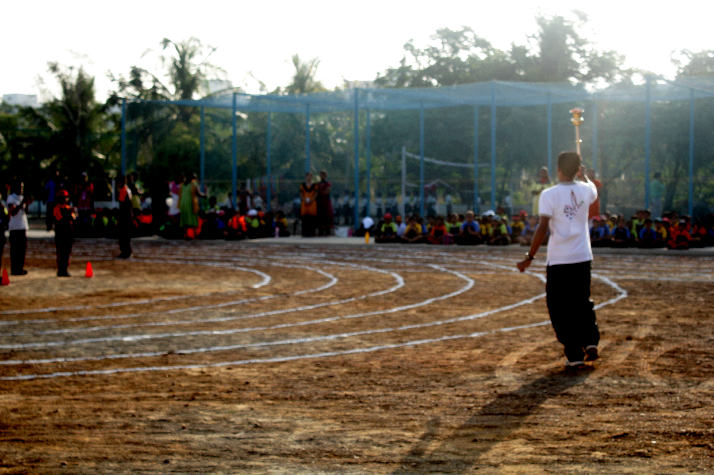

Find links at the end of the page to navigate in the website

Hello World I am Anil Himam. All my childhood have grown up watching Iron man films thats the reason I have chosen technology as my career.
Further I want to highlight the fact that I like tinkering with things to try and understand the principal of how anything works. This has always been the way I learnt anything since my childhood to not just understand a concept but to use its principals to create something.
In this process of experiential learning I have achieved some small goals which are as follows.
-
Building STEM Projects
I have built many STEM projects for different competitions including the CBSE National Level STEM fair, World Robotics Olympiad (WRO) and High School Science Fair.
-
Learning to Program computers
I am mostly self taught when it comes to computer programming. The first languauge I learnt was SWIFT.
I was taught the fundamentals of python in high school after which I have learnt its applications on my own. Thanks to cs50x I have also learnt Javascript, HTML, CSS and C programming.
-
Working on Robotics Projects
To work on robotics projects I have learnt how to use arduino and lego ev3. Most of the projects I hve worked on are using the mentioned equiment.
-
Taking courses on Artificial Intelligence
I am also pursing my interest towards Artificial Intelligence by taking courses offered by Harvard. I have always been interested in Artificial Intelligence due to Iron Man movies.
My Hobbies

-
Sports
I am an athelete. I have participated in inter and intra school sports competitions.
I also like the concept of endurance and stamina for which I have participated in marathons
for the rane of 5km and 10km.
-
Dancing and Music
I like to dance and listen to music in my leisure time. I find that music is a great way to destress from the problems we face in our daily lives.
-
Art of Problem Solving
Lastly I love to test my brain in criticial situations, this is the reason I like programming.
I always try and find time to solve problems of different kinds be it puzzles or anything.
To get back to the homepage
click here